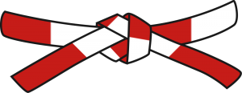

Cinturones

Kyu
6º Kyu o Blanco

Simboliza la inocencia, el desconocimiento. Es el cinturón con el que se comienza el proceso de aprendizaje y perfeccionamiento del judo.
5º Kyu o Amarillo

Indica el comienzo de la búsqueda de aquello que permanece oculto
4º Kyu o Naranja

Simboliza más fuerza, el despertar del interés por seguir mejorando y aprendiendo
3º Kyu o Verde

Simboliza la reflexión, la esperanza de seguir progresando en nuestro camino hacia la perfección.
2º Kyu o Azul
Simboliza la pureza, la limpieza, la apertura hacia nuevos horizontes. Relacionado con el azul del cielo y del mar.
1º Kyu o Marrón
Simboliza solidez y la iniciación al verdadero conocimiento que llegará con los Danes.
Dan
Negro
Se usa desde el primero hasta el quinto dan. Su simbolismo va desde el comienzo del conocimiento hasta llegar a profesor y maestro; pasando por la diplomacia y la cortesía.
Rojo y blanco
Se utiliza desde el sexto hasta el octavo dan. Simboliza la pasión y entrega total sin condición. Es el color de la maestría y el saber.
Rojo

Es el último cinturón y se usa para el noveno y décimo dan. Simboliza una vida entera dedicada al judo. Indica pleno conocimiento y saber. Es la meta de todo judoka pero son escasos los propietarios del mismo ya que para obtenerlo es necesario un gran cúmulo de años.